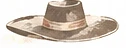
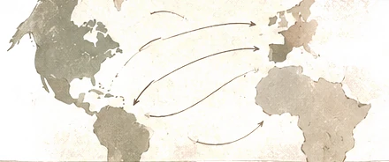
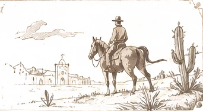
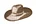
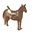

La gran tradición
ecuestre
Un viaje de tradiciones, caballos y culturas iberoamericanas
Una misma raíz,
múltiples caminos.


a América

Un viaje de tradiciones, caballos y culturas iberoamericanas
Una misma raíz,
múltiples caminos.




